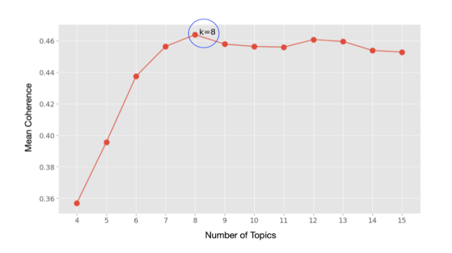
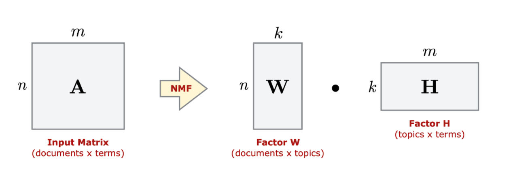

Topic Modeling
Topic modelling is an unsupervised text mining approach. Input: corpus of unstructured text documents with no labels (reviews, news) Output: Multiple topics for a single document or corpus
Steps:
Tokenize: split raw text into individual tokens
Bag-of-Words Model:
Method to move from tokens to numeric features
Each document is represented by a vector where m is the number of unique terms across all documents
Create document-term matrix:
Each document can be represented as a term vector, with an entry indicating the number of time a term appears in the document:
Additional Preprocessing steps:
Minimum token length, like excluding tokens of length < 2
Converting all words to lowercase.
Filter stop words
Stemming
Translate Document Term Matrix to:
TF-IDF in order to give higher weights to more “important” terms.
TF-IDF: Common approach for weighting the score for a term in a document.
Term Frequency: Number of times a given term appears in a single document.
Inverse Document Frequency: basically penalizes common terms that appear in almost every document.
Two Topic Modeling Approaches:
Probabilistic - view each document as a mixture of a small number of topics where words and documents get probability scores for each topic.
Latent Dirichlet Allocation (LDA)
Matrix Factorisation - apply methods from linear algebra to decompose a single matrix into a set of smaller matrices
Non-negative Matrix Factorisation (NMF)
Evaluate number of topics:
Perplexity: how surprised a model is of new data it has not seen before, and is measured as the normalized log-likelihood of a held-out test set.
Coherence: Measures score a single topic by measuring the degree of semantic similarity between high scoring words in the topic

NFM Model
NMF can be applied for topic modeling, where the input is a document-term matrix
Input: Document-term matrix A; Number of topics k.
Output: Two k-dimensional factors W and H approximating A H Factor:
Contains term weights relative to each of the k topics.
Each row corresponds to a topic, and each column corresponds to a unique term in the corpus vocabulary.
Sorting the values in each row gives us a ranking of terms W Factor
Contains document membership weights across the k topics.
Each row corresponds to a different document, and each column corresponds to a topic.
Sorting the values gives us a ranking of the most relevant documents for each topic.

Latent Dirichlet Allocation
LDA assumes that all words in the document can be assigned a probability of belonging to a topic.
Topics in a document are unknown, but the idea is topics are present as the text is generated based on a distribution of topics and distribution of words in that topic.
Goal
Determine the number of topics that a document contains.
Each document is modeled as a multinomial distribution of topics
Each topic is also modeled as a multinomial distribution of words.
LDA assumes the text feed into the model will contain words that are related.
Steps
Tokenization: Split the text into sentences and the sentences into words, and lowercase words and remove punctuation
Remove stopwords
Lemmatize: Words in third person are changed to first person and verbs in past and future tenses are changed into present
Stemming: Words are reduced to their root form
Create Bag-of-Words Model
Dictionary containing the number of times a word appears in the training set.
Can also create a N_Gram Model:
bigrams which are two words frequently occurring together in the document
trigrams, which are 3 words frequently occurring - for example. This can provide more contextual information than just bag of words
Perform TF-IDF on document set
Perform Topic Model (e.g. LDA) + Evaluate
Example Output:
Topic 1:
_0.016“car” + 0.014“power” + 0.010“light” + 0.009“drive” + 0.007“mount” + 0.007“controller” + 0.007“cool” + 0.007“engine” + 0.007“back” + ‘0.006“turn”.
It means the top 10 keywords that contribute to this topic are: ‘car’, ‘power’, ‘light’.. and so on and the weight of ‘car’ on topic 1 is 0.016.
The weights reflect how important a keyword is to that topic